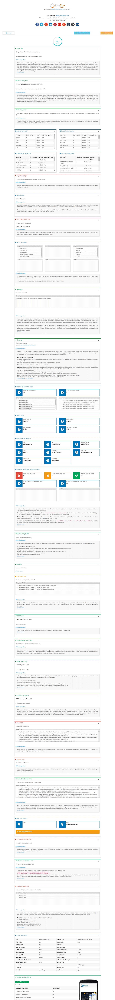

SiteDoctor : Website Health Checker - A SiteSpy Add-on
- Created: 21st April 2018
- Latest update: 21st April 2018
- by: SiteSpy Team | xeroneitbd
- Contact Email: info@xeroneit.net
- Developed by : XerOne IT
What is SiteDoctor?
It is not a standalone app, get SiteSpy to use this add-on.
If you want this as standalone app you can get get from here.
Key Features
How to Install?
- SiteDoctor is not a standalone app. As we already mentioned, it is an add-on of SiteSpy. So first requirement of installting SiteDoctor is to get & install SiteSpy (at least v4.0 required.):
- Installting SiteDoctor is just few clicks easy.
- Login to your SiteSpy admin panel, go to Add-ons menu and click Upload New Add-on and upload SiteDoctor Zip File.

- Now add-on has been uploaded and all you need to do is to activate the add-on using the purchase code and it's done :)

How it works?
Step 1 : Type website address and submit
Step 2: Download PDF report/ Share report to social media
Step 3 : Add competutor website
